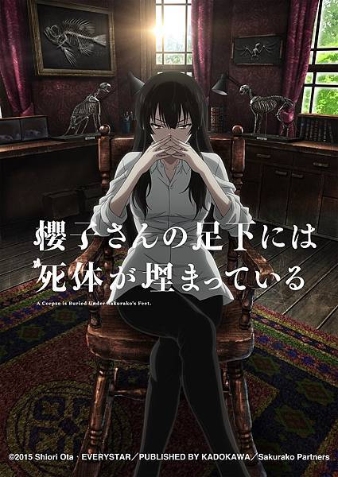

AnimeInterester
櫻子小姐的腳下埋著屍體

故事簡介
家住北海道旭川市的平凡高中生「館脇正太郎」在偶然的情況下認識了住在附近的深閨大小姐「九條櫻子」。櫻子雖然外表是個脫俗的大美人，骨子裡卻是個熱中解剖的屍體愛好者。兩人結識後，周遭開始發生許多殺人事件。櫻子將憑藉著自身法醫學的豐富知識，抽絲剝繭地解開真相！
製作人員
原作：太田紫織
導演：加藤誠
副監督：別所誠人
系列構成：伊神貴世
角色原案：鉄雄
角色設計・總作畫監督：サトウミチオ
道具設計：小川浩
美術監督：伊藤聖 / キムヒョンヌ
美術設定：伊藤聖
色彩設計：篠原真理子
攝影監督：津田涼介
剪輯：右山章太
CG導演：小林学
音響監督：菅原輝明
音響效果：上野励
音響制作：ダックスプロダクション
音樂：TECHNOBOYSPULCRAFTGREEN-FUND
音樂製作人：吉江輝成
音樂制作：ランティス
製作：「櫻子さん」製作委員会
聲優名單
九条櫻子：伊藤静
館脇正太郎：榎木淳彌
鴻上百合子：今村彩夏
澤梅：磯邊萬沙子
内海洋貴：高橋廣樹
磯崎齋：石田彰
今居陽人：柿原徹也
各集標題
| 話數 | 標題 |
|---|---|
| 1 | 喜愛骨頭的公主 |
| 2 | 你的家在哪裡 |
| 3 | 沉眠於夏天的骸骨 |
| 4 | 被詛咒的男人 前篇 |
| 5 | 被詛咒的男人 後篇 |
| 6 | 旭橋異聞 |
| 7 | 受人託付之骨 前篇 |
| 8 | 受人託付之骨 後篇 |
| 9 | 祖母的布丁 |
| 10 | 蝴蝶消失在十一月 前篇 |
| 11 | 蝴蝶消失在十一月 後篇 |
| 12 | 櫻子小姐的腳下是... |